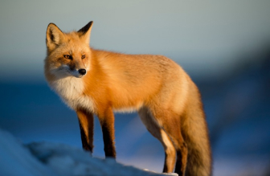
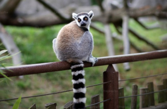
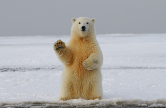
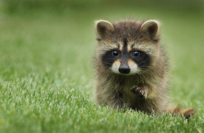
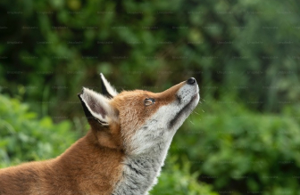
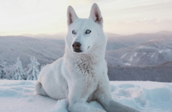
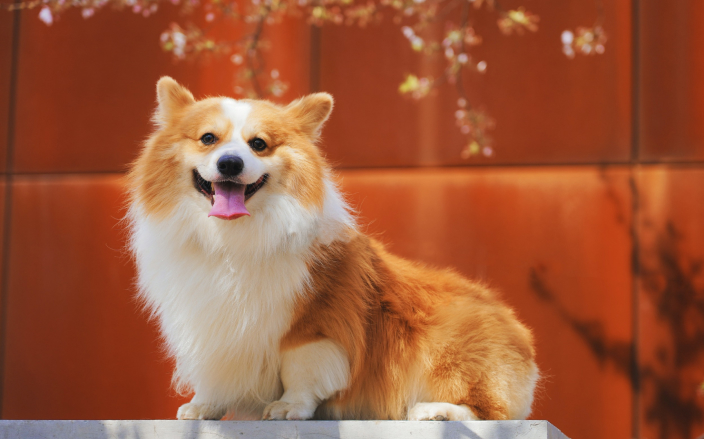
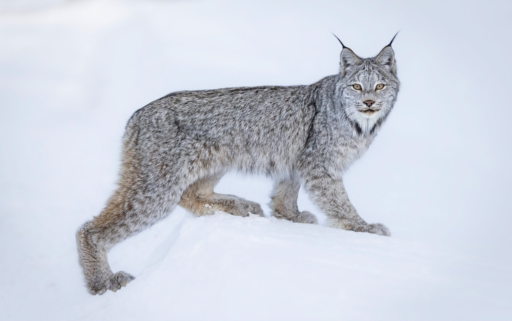

Узнай о животных всё!






World of Animals - компания , которая занимается изучением животных,здесь мы рассказываем информацию про различных животных. Также мы расказваем про характер,места обитания и питание животных,ещё скажем,каких можно заводить,а какие нет. Наш офис находится на улице Ленина 5.
Животные
Домашние животные

Домашние животные — животные, которые были одомашнены человеком разумным и которых он содержит, предоставляя им кров и пищу.
Дикие животные

Дикие животные — объекты животного мира, естественной средой обитания которых является дикая природа.